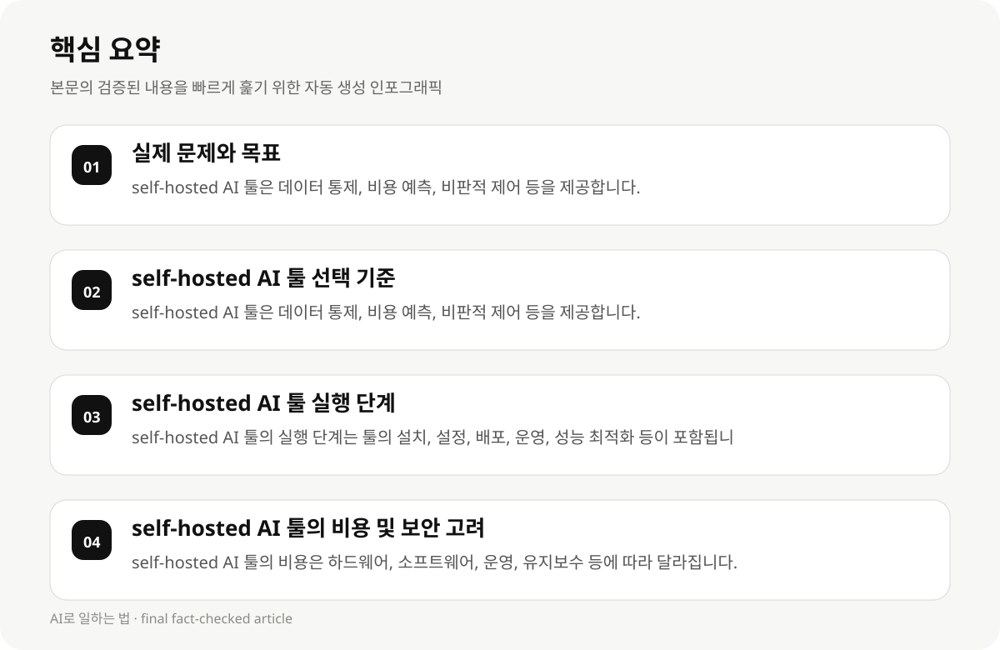

실제 문제와 목표 #
개발자 및 AI 실무자가 self-hosted AI 툴을 실제 업무에 적용할 때, 툴의 종류, 기술적 필요성, 예산, 보안, 운영 효율성, 비용, 그리고 성능 등을 고려해야 합니다. 하지만 툴의 선택 기준과 실행 단계에 대한 구체적인 정보가 부족합니다.
이 가이드는 툴의 적합한 활용 방식, 선택 기준, 실행 단계를 한국어로 설명하며, 실제 업무에 적용할 수 있도록 구체적인 조언을 제공합니다.
- self-hosted AI 툴은 데이터 통제, 비용 예측, 비판적 제어 등을 제공합니다.
- Ollama, LocalAI, Open WebUI 등 다양한 툴이 존재하며, 각각의 기술적 필요성과 예산에 맞춰 선택해야 합니다.
- 이 가이드는 툴의 선택 기준, 실행 단계, 비용, 보안, 운영 효율성, 성능 등을 다루며, 실제 업무에 적용할 수 있도록 구체적인 조언을 제공합니다.
self-hosted AI 툴 선택 기준 #
self-hosted AI 툴의 선택은 기술적 필요성, 예산, 보안, 운영 효율성, 성능, 그리고 툴의 확장성에 따라 결정됩니다.
Ollama는 80가지 모델 가족을 지원하며, 간단한 CLI를 통해 모델 배포가 가능합니다. 이는 툴의 사용 편의성과 모델 지원 범위를 고려할 때 유리합니다.
Ollama와 같은 툴은 기술적 필요성과 예산에 따라 선택해야 하며, 툴의 확장성과 성능은 실제 업무에 적용할 때 중요한 요소입니다.
- self-hosted AI 툴은 데이터 통제, 비용 예측, 비판적 제어 등을 제공합니다.
- Ollama는 80가지 모델 가족을 지원하며, 간단한 CLI를 통해 모델 배포가 가능합니다.
- Ollama와 같은 툴은 기술적 필요성과 예산에 따라 선택해야 하며, 툴의 확장성과 성능은 실제 업무에 적용할 때 중요한 요소입니다.
self-hosted AI 툴 실행 단계 #
self-hosted AI 툴의 실행 단계는 툴의 설치, 설정, 배포, 운영, 그리고 성능 최적화 등이 포함됩니다.
Ollama는 Docker를 사용하여 툴을 배포할 수 있으며, 툴의 설치와 설정은 간단합니다. 이는 툴의 사용 편의성과 확장성을 고려할 때 유리합니다.
Ollama와 같은 툴은 툴의 설치, 설정, 배포, 운영, 성능 최적화 등이 포함되며, 실제 업무에 적용할 때 중요한 요소입니다.
- self-hosted AI 툴의 실행 단계는 툴의 설치, 설정, 배포, 운영, 성능 최적화 등이 포함됩니다.
- Ollama는 Docker를 사용하여 툴을 배포할 수 있으며, 툴의 설치와 설정은 간단합니다.
- Ollama와 같은 툴은 툴의 설치, 설정, 배포, 운영, 성능 최적화 등이 포함되며, 실제 업무에 적용할 때 중요한 요소입니다.

self-hosted AI 툴의 비용 및 보안 고려 #
self-hosted AI 툴의 비용은 하드웨어, 소프트웨어, 운영, 유지보수 등에 따라 달라집니다. 이는 툴의 선택 기준과 예산에 따라 결정됩니다.
Ollama는 하드웨어 및 소프트웨어 비용을 최소화할 수 있으며, 운영 및 유지보수 비용은 낮습니다. 이는 툴의 비용 효율성과 보안을 고려할 때 유리합니다.
Ollama와 같은 툴은 하드웨어 및 소프트웨어 비용, 운영 및 유지보수 비용, 그리고 보안을 고려하여 툴의 선택 기준을 설정해야 합니다.
- self-hosted AI 툴의 비용은 하드웨어, 소프트웨어, 운영, 유지보수 등에 따라 달라집니다.
- Ollama는 하드웨어 및 소프트웨어 비용을 최소화할 수 있으며, 운영 및 유지보수 비용은 낮습니다.
- Ollama와 같은 툴은 하드웨어 및 소프트웨어 비용, 운영 및 유지보수 비용, 그리고 보안을 고려하여 툴의 선택 기준을 설정해야 합니다.
self-hosted AI 툴의 성능 및 확장성 #
self-hosted AI 툴의 성능은 모델의 성능, 처리 속도, 메모리 사용량, 그리고 데이터 처리 효율성에 따라 달라집니다.
Ollama는 모델의 성능을 최적화하고, 처리 속도와 메모리 사용량을 최소화할 수 있습니다. 이는 툴의 성능 최적화와 확장성을 고려할 때 유리합니다.
Ollama와 같은 툴은 모델의 성능, 처리 속도, 메모리 사용량, 데이터 처리 효율성 등을 고려하여 툴의 선택 기준을 설정해야 합니다.
- self-hosted AI 툴의 성능은 모델의 성능, 처리 속도, 메모리 사용량, 데이터 처리 효율성에 따라 달라집니다.
- Ollama는 모델의 성능을 최적화하고, 처리 속도와 메모리 사용량을 최소화할 수 있습니다.
- Ollama와 같은 툴은 모델의 성능, 처리 속도, 메모리 사용량, 데이터 처리 효율성 등을 고려하여 툴의 선택 기준을 설정해야 합니다.
self-hosted AI 툴의 실전 적용 사례 #
self-hosted AI 툴은 실제 업무에 적용할 때, 툴의 사용 편의성, 확장성, 성능, 보안, 비용, 그리고 운영 효율성을 고려해야 합니다.
Ollama는 툴의 사용 편의성과 확장성을 고려하여 실제 업무에 적용할 수 있습니다. 이는 툴의 실전 적용 사례를 제공합니다.
Ollama와 같은 툴은 툴의 사용 편의성, 확장성, 성능, 보안, 비용, 그리고 운영 효율성을 고려하여 실제 업무에 적용할 수 있습니다.
- self-hosted AI 툴은 툴의 사용 편의성, 확장성, 성능, 보안, 비용, 그리고 운영 효율성을 고려하여 실제 업무에 적용할 수 있습니다.
- Ollama는 툴의 사용 편의성과 확장성을 고려하여 실제 업무에 적용할 수 있습니다.
- Ollama와 같은 툴은 툴의 사용 편의성, 확장성, 성능, 보안, 비용, 그리고 운영 효율성을 고려하여 실제 업무에 적용할 수 있습니다.
self-hosted AI 툴의 선택 기준 및 실행 단계 #
self-hosted AI 툴의 선택 기준은 기술적 필요성, 예산, 보안, 운영 효율성, 성능, 그리고 툴의 확장성에 따라 결정됩니다.
Ollama는 툴의 선택 기준과 실행 단계를 고려하여 실제 업무에 적용할 수 있습니다. 이는 툴의 선택 기준과 실행 단계를 설명합니다.
Ollama와 같은 툴은 툴의 선택 기준과 실행 단계를 고려하여 실제 업무에 적용할 수 있습니다.
- self-hosted AI 툴의 선택 기준은 기술적 필요성, 예산, 보안, 운영 효율성, 성능, 그리고 툴의 확장성에 따라 결정됩니다.
- Ollama는 툴의 선택 기준과 실행 단계를 고려하여 실제 업무에 적용할 수 있습니다.
- Ollama와 같은 툴은 툴의 선택 기준과 실행 단계를 고려하여 실제 업무에 적용할 수 있습니다.
self-hosted AI 툴의 비용 및 보안 고려 #
self-hosted AI 툴의 비용은 하드웨어, 소프트웨어, 운영, 유지보수 등에 따라 달라집니다. 이는 툴의 선택 기준과 예산에 따라 결정됩니다.
Ollama는 하드웨어 및 소프트웨어 비용을 최소화할 수 있으며, 운영 및 유지보수 비용은 낮습니다. 이는 툴의 비용 효율성과 보안을 고려할 때 유리합니다.
Ollama와 같은 툴은 하드웨어 및 소프트웨어 비용, 운영 및 유지보수 비용, 그리고 보안을 고려하여 툴의 선택 기준을 설정해야 합니다.
- self-hosted AI 툴의 비용은 하드웨어, 소프트웨어, 운영, 유지보수 등에 따라 달라집니다.
- Ollama는 하드웨어 및 소프트웨어 비용을 최소화할 수 있으며, 운영 및 유지보수 비용은 낮습니다.
- Ollama와 같은 툴은 하드웨어 및 소프트웨어 비용, 운영 및 유지보수 비용, 그리고 보안을 고려하여 툴의 선택 기준을 설정해야 합니다.
self-hosted AI 툴의 성능 및 확장성 #
self-hosted AI 툴의 성능은 모델의 성능, 처리 속도, 메모리 사용량, 그리고 데이터 처리 효율성에 따라 달라집니다.
Ollama는 모델의 성능을 최적화하고, 처리 속도와 메모리 사용량을 최소화할 수 있습니다. 이는 툴의 성능 최적화와 확장성을 고려할 때 유리합니다.
Ollama와 같은 툴은 모델의 성능, 처리 속도, 메모리 사용량, 데이터 처리 효율성 등을 고려하여 툴의 선택 기준을 설정해야 합니다.
- self-hosted AI 툴의 성능은 모델의 성능, 처리 속도, 메모리 사용량, 데이터 처리 효율성에 따라 달라집니다.
- Ollama는 모델의 성능을 최적화하고, 처리 속도와 메모리 사용량을 최소화할 수 있습니다.
- Ollama와 같은 툴은 모델의 성능, 처리 속도, 메모리 사용량, 데이터 처리 효율성 등을 고려하여 툴의 선택 기준을 설정해야 합니다.